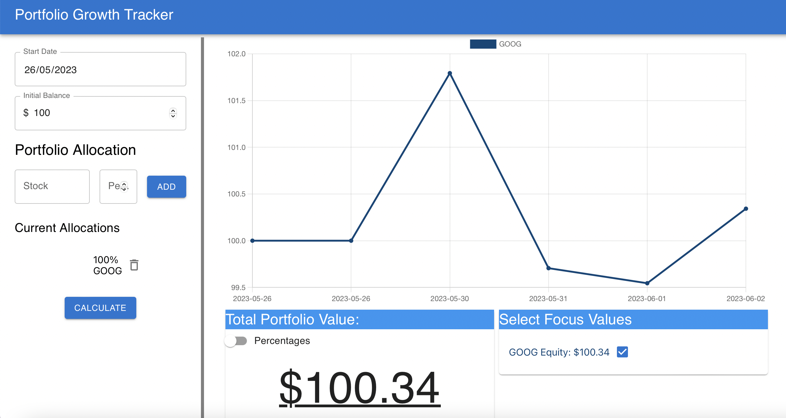

Portfolio Calculator
Introducing "Portfolio Tracker" - Your Personal Asset Performance Analyzer!
Imagine you started investing on March 20, 2013, with an initial balance of $32,500. By inputting these details into Portfolio Tracker Pro, you can delve into the performance of your investments over time and gain valuable insights. Not only that, but you can also specify the allocation of your portfolio on that day: 20% in AAPL, 50% in GOOG, and 30% in MSFT.
Portfolio Tracker harnesses the power of React, a widely acclaimed JavaScript framework, to provide you with a seamless and interactive user experience. Our integration with the AlphaVantage API ensures accurate and up-to-date market data, enabling precise calculations of portfolio returns and asset valuations.
Visualizing the output is a breeze with Portfolio Tracker Pro. You can explore various dynamic charts and graphs, showcasing the aggregate portfolio returns over time. Witness the evolution of your portfolio allocation and see how your investments in AAPL, GOOG, and MSFT have performed individually.
Portfolio Tracker Pro is your reliable companion in understanding the past and present performance of your assets. It enables you to make informed investment decisions, analyze historical trends, and project potential future growth. Experience the power of data-driven insights and take control of your financial future with Portfolio Tracker Pro!!
Website Link: Portfolio Tracker.
Technologies Used: React.js, AlphaVantage API